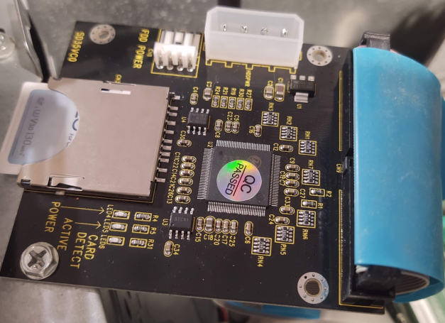
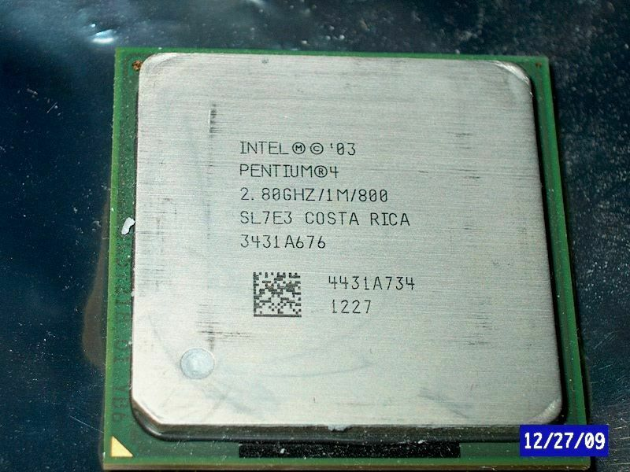

Early 2000s Retro PC
What’s the point?
Emulation, backward compatibility, GOG, and Steam make building a retro PC from this era nearly pointless. So why do it?
I was fortunate enough to grow up when advancements in personal computers were at a relatively high pace. I had an Apple ][, 8088 through 486 with DOS, a Vic-20 in my pre-teens. I used the 486 for quite a while, probably until around 1996. Then during high school, I managed to work a part-time job where I bought a Compaq with a Cyrix 6x86 at CompUSA, which was mediocre at best. Eventually, I saved for building my own: AMD K6-2, 128MB of RAM, 13GB hard drive, Windows 98, Voodoo Banshee. This computer was pretty decent at the time and served me well into the 2000s when I went to college.
In college, the Pentium 3/4 and Athlon processors were the kings of the hill. I never had enough money to get anything better, so I stuck it out with my outdated Socket 7 computer. I always wanted a PC from this era, either Pentium 4 or original Athlon (slot A preferably.) Eventually, I had enough money to upgrade to a Duron processor and bought a Radeon DDR. Which I held onto until the Athlon 64x2 came out, which ended up being my main machine for about 8 years.
I have a soft spot for the late-90s early-2000s computers. A lot was going on during that time. You had Cyrix, Via, AMD, and Intel trying to outclass each other either in performance or price. We had the Transmeta Crusoe, an unusual-at-the-time VM-based processor. Sun SPARC and DEC Alpha were still alive and competitive. Also, that whole gigaflop thing from Apple’s marketing branch was way overblown by the media. Adding to that was nVidia’s GeForce 256, known as “the world’s first GPU,” along with Ati’s Radeon equivalent. Not to mention Rambus, 3 types of SDRAM, UltraHLE, the demise of 3dfx, multiple GeForce MX2 re-brands, PCI-Express vs. AGP, and the list goes on.
TLDR
So that’s why that point in time was exciting for me. I plan to build a computer using hardware from that era to play games and applications designed for it. Skip all the way to the bottom if you want to see the benchmarks and cost breakdown.
Where to start
This project is meant to be inexpensive. Try to cut down on costs wherever possible. I don’t need absolute top-of-the-line hardware, just something acceptable for what I want to do.
So I started by making a list of games I want to play:
| Game | Min Requirements (üòÄ to üôÅ) |
|---|---|
| Half Life | üòÄ |
| Morrowind | üôÇ |
| KOTOR 1, 2 | üôÇ |
| Rise of Nations | üôÇ |
| Age of Empires 2 | üòÄ |
| GTA 3, Vice City | üôÇ |
| Sid Meier’s Pirates! | üôÇ |
| Omikron the Nomad Soul | üòÄ |
| Dark Forces 1, 2 | üòÄ |
| Dark Forces 3 | üôÇ |
| Star Wars Racer | üòÄ |
| Doom 1, 2 | üòÄ |
| Quake 1, 2 | üòÄ |
| Quake 3 | üôÇ |
| Unreal | üòÄ |
| Doom 3 | üòê |
| Half Life 2 (without Steam) | üòê |
| Oblivion | üôÅ |
| GTA San Andreas | üòê |
I think Oblivion would be the most difficult to get running on mid-level hardware. I remember it requiring one heck of a computer when it came out. IIRC, Doom 3 required GeForce 3 / Radeon 8000-series or higher. San Andreas needs a Geforce 3 or better as well. I’ll assume Half-Life 2 is similar in requirements. I believe a Pentium 4 or Athlon is enough for all of these games.
| Basic requirements |
|---|
| Windows XP SP3 |
| Pentium 4 or Athlon |
| 512MB of RAM |
| 80GB hard drive |
| DVD Drive |
| DirectX 9 compliant graphics card |
Procurement
I looked around in my attic and my parent’s house for my old computers or parts. I found an old Socket 7 K6-2 that was my siblings; it was far too old for what I needed. I did manage to find my old Radeon DDR (re-branded later as Radeon 7500) but not the Voodoo Banshee, Geforce3 Ti200, Radeon HD2400Pro I used to own.
I recalled that I bought a computer from geeks.com well before they shut down, so I knew it was hiding somewhere in my house. Eventually, I found it in the garage sitting behind many boxes. This was a unique computer. It has a Pentium 4 2.4, 256MB of RAM, a CD drive, a 100GB hard drive, 2 PCMCIA slots, built-in video, USB 1.1, Firewire, and two full-size PCI slots. That last part is why this computer doesn’t really cut it, no AGP or PCI-E support. I’m forced into using video cards designed for business class machines.
I gave it a shot by buying a Radeon x1300 PCI card off of eBay. Paid about $30 total, so not a huge investment. Once the video card was installed, I tried out Morrowind. It was a terrible experience. Looked great, just way too slow. Star Wars Racer worked very well until I ejected the CD. It got stuck inside the mechanism and was scratched heavily on the way out. Killed the disc and my motivation.
Several months later, my dad said he found a few computers. Two old Dell desktops from around 2002-2003. I checked them out and took the one with more RAM and a non-integrated video card. At home, I discovered that the computer did not boot, the RAM was failing, there was a keyboard error, and worst of all, the video card was shot. I removed the card and saw that it was a GeForce FX5200. If you know anything about these cards, they are essentially junk. No big loss. The keyboard issue seems to be linked to the RAM because reorienting the sticks to run in single channel instead of dual-channel appeared to fix the RAM and keyboard issue.
| Current specs | |
|---|---|
| CPU | Pentium 4 2.8Ghz Northwood |
| Memory | 1024MB DDR |
| Disk | 100GB Hard Drive (IDE) |
| Optical | DVD Drive |
| Video | X1300 PCI Video Card |
I ran the above specs in 3DMark2001, here’s the result: 5031 (Note, all of these scores are at 1024x768x32)
Comparing that to similar computers of the time, not too great. Pretty low, actually. I swapped the x1300 out for the much older Radeon DDR AGP. Reran it, and this time I got: 4440. Lower, but that gap is not very large considering that the x1300 is 3-4 generations ahead. PCI is a severe bottleneck. I tried GTA3 on both cards. The Radeon had a lot of trouble running the game smoothly, and the x1300 edged it out just a bit but still unplayable. No former benchmarking beyond that.
Back to eBay. I found a new-old-stock VisionTek Radeon 9200 AGP card. 9000-series with 256MB VRAM, DirectX 9 (heh), seemed like a good deal. $30 shipped in just a few days. After I got the card, I did a little bit of research. The card is actually a low-mid 8000-series chip with DirectX9 compatibility, which is interesting. This means the card will appear to DirectX games as a DX9 card but doesn’t necessarily support rendering everything correctly. More on that later.
Again with 3DMark2001, I got the following: 6112. Not bad for what it is. I used the driver disc that came with the card, so I upgraded the drivers to the latest that AMD has available. Reran the benchmark and got 6606, a decent bump. It could be driver optimization to get 3DMark to give elevated results, I don’t know for sure, but that was common back then.
GTA3 worked well on this card at default settings. I jumped straight into Oblivion and was met with quick menus, sluggish character creation, and then a white screen with a shaded pot and HUD. I could move around and see a window in the distance, but all of the textures were completely white. Unsupported DirectX 9 features were biting back. I dropped the x1300 back in just to see what it would do, and yeah, it runs, but the framerate never broke 20fps, and visuals were set to the absolute minimum.
Finding the right video card
For some reason, possibly demand, AGP video cards are outrageously priced. You could get a PCI-E Radeon 2600Pro for around $15, but the AGP version goes for $50-80, most listed as “untested as-is.” That’s close to what they cost new, not adjusted for inflation.
I found a video card lot that included a Radeon x1650 AGP, GeForce FX5700 AGP, and GeForce GT520 PCI-E. All are untested and unreturnable. I took a shot and bought it, paid about $30. They passed the visual inspection, but the Radeon x1650 was discovered to be dead. I tried to reflow the solder on the x1650 to see if I could bring it back to life. It was a long shot and didn’t pay off.
The FX5700 booted into Windows and posted a respectable 8372 in 3DMark2001 but had visual issues such as screen flickering black during 3d scenes. Basically unplayable; there’s something up with the card.
So I’m back with the Radeon 9200 for the time being. Honestly, it’s a pretty decent card and doesn’t have a fan. No noise is ideal.
Speaking of noise…
Hard drive goes whhhhhhirrrr
The hard drive in the Dell wasn’t the original drive. It was upgraded to a 100GB IDE that I had lying around. The original drive was long gone. This old platter drive was loud. Ear-piercingly loud. It triggered tinnitus just walking by it, let alone sitting next to it for hours. It has to go.
An interesting feature with this Dell is support for two SATA connections yet no SATA power connector. I looked for solid-state low capacity SATA drives. Pretty cheap brand new, but I wanted to do something different. I have quite a few mid-capacity SD cards (32GB - 128GB) hanging around. Wouldn’t it be neat to use an SD to IDE card so I could have swappable configurations for this computer? The card costs approximately $12. It accepts a full-size SD card and connects to an IDE cable and standard Molex power connector.
I dropped in a 128GB SD card and loved the near-complete silence when you turn on the computer. Plus, today’s SD cards are remarkably performant compared to platter drives from 20 years ago. Windows XP required no additional installation setup, and a fresh install was complete within 5-8 minutes. Games install/load very quickly as well. Not sure about the longevity of these cards, but as cheap as they are to replace, I’m not worried.
CPU Upgrade
I found a Prescott HyperThreading 2.8Ghz/800 CPU on eBay for $3, and I couldn’t pass it up. Why not, it was the craze back then even if performance is negligible. It replaced the older non-hyperthreading Northwood chip. No issues as a drop-in replacement.
| Current specs | |
|---|---|
| CPU | Pentium 4 HT 2.8Ghz Prescott |
| Memory | 1024MB DDR |
| Disk | 128GB SD Card to IDE |
| Optical | DVD Drive IDE |
| Video | Radeon 9200 AGP (4x AGP Slot) |
eBay Listing Happenstance
While perusing ebay for deals on AGP cards, I refreshed and found a brand new listing for a Radeon 4650 AGP for $10 and a claim that it was tested as working. I immediately scooped it up. The 4350, 4650, and 4670 were the last Radeon cards produced for AGP. There aren’t as fast as the last generation AGP cards, but still pretty respectable in their own right. This card can definitely run Oblivion with the limiting factor now resting on the remaining hardware and the 4x AGP slot.
This card requires a Molex connector for added power, so that made me wonder about the power supply. I was shocked to see that the default power supply is a paltry 170 watt. Even in 2003, Pentium 4’s slurped power. You would think it was at least 230-250 watt. Before installing the new card, I swapped it out with a spare 400 watt low-noise one just to be sure.
When the card arrived, it was in pretty decent condition. The mounting plate was falling off from missing stand-off bolts, once those were replaced and fresh coat of thermal paste was applied, the card looked brand new. And surprisingly, it worked. The drivers for Windows XP needed to be installed manually, which there are a lot of complaints on the internet about this card model so it wasn’t just me. I reran 3DMark2001 with the new card and got the score 14874. Comparing that to other computers of the time, it’s about equivalent to the Radeon 9800 Pro. I have a feeling the AGP 4x slot and the rest of the components are the limiting factor and not this card.
To add to this, Oblivion runs well on Medium setting at 640x480, nice. I’m optimistic for the rest of the list.
Some Benchmarking
| Current specs | |
|---|---|
| CPU | Pentium 4 HT 2.8Ghz Prescott |
| Memory | 1024MB DDR |
| Disk | 128GB SD Card to IDE |
| Optical | DVD Drive IDE |
| Video | Radeon HD4650 AGP (4x AGP Slot) |
3DMark2001 SE:
| Card | Score |
|---|---|
| Radeon DDR | 4440 |
| Radeon x1300 | 5031 |
| Radeon 9200 | 6606 |
| GeForce 5700LE | 8372 |
| Radeon HD4650 | 14874 |
I’m using MSI Afterburner since it’s compatible with Windows XP and shows CPU, GPU and Memory usage.
Here are the results for Oblivion:
| Res | Quality | Avg FPS | Avg CPU | Avg Mem |
|---|---|---|---|---|
| 640x480 | Very Low | 30 (City) / 50 (Outside) | 68% | 70% |
| 640x480 | Medium | 23 (City) / 42 (Outside) | 68% | 86% |
| 720x480 | Medium | 22 (City) / 40 (Outside) | 68% | 86% |
The software to monitor the GPU wasn’t working, it was constantly at 99% and reported that 409600% of the VRAM was being used. The GPU temp stayed around 38-43C, so I really doubt it was pegged.
| Game | Res | Quality | Avg FPS | Avg CPU | Avg Mem |
|---|---|---|---|---|---|
| Morrowind | 1024x768 | High | 30 (Outside) / 70 (Inside) | 70% | 62% |
| Quake II | 1024x768 | High | 60 | 50% | 50% |
| KOTOR | 1024x768 | High | 50 (locked at 30 in cut scenes) | 47% | 50% |
Oddly enough, after playing Quake 2 and rebooting the machine, I tried KOTOR 1, and the GPU usage meter started working. Still not sure if it’s accurate, but it does fluctuate as expected, so it may very well be. I played KOTOR and Morrowind; the GPU never broke 40% usage both times. I’m sure the motherboard is holding it back by being stuck in 4x mode. It could be the RAM too.
I decided not to benchmark any other games. This build is more than adequate and will run all of the games I’m aiming for.
Conclusion and Costs
I successfully built a time-period computer for playing older Windows 98/XP games on a budget. The video card is definitely the most challenging component to obtain. Expect to keep searching for a deal or dropping over half your budget on one of the many available on eBay. Here’s a cost breakdown; I looked up the average price on eBay for any parts I got for free.
| Final Configuration | Price | |
|---|---|---|
| CPU | Pentium 4 HT 2.8Ghz Prescott | $3 |
| Memory | 1024MB DDR | $10 (eBay avg) |
| Disk | 128GB SD Card to IDE | $12 (adapter) + $15 (card) = $27 |
| Optical | DVD Drive IDE | $15 (eBay avg) |
| Video | Radeon HD4650 AGP | $10 (good deal, typically $80-100) |
| Power Supply | Corsair 400w | $20 (eBay avg) |
| Base Computer | Dell Dimension 4600 | $60-80 (eBay avg, depending on config) |
| Total | $40 (with free components) $155 (w/ ebay avgs) |
| Failed Investments | |
|---|---|
| Radeon x1650 (AGP / DOA) GeForce 5700LE (AGP / Has issues) GeForce 210 (PCI-E / Works) |
$30 (bundle) |
| Radeon 9200 (AGP / Works) | $30 (new old stock) |
| Radeon x1300 (PCI / Works) | $30 (new old stock) |
I ended up shelling out $130 in parts yet only using $40 worth. I have 3 video cards leftover and a questionable GeForce FX5700, but I don’t plan to use them, so it’s scrap. The Radeon 9200 is a decent card, albeit underwhelming. I would aim for something a bit more powerful, such as the Radeon 9700 Pro or one of the X-series cards. A decent X800 or X1600 can be found for around $40-60 if you are diligent, but plan on upgrading the power supply if you do.
While some may find it a waste, it was a fun project down memory lane. If you want to keep your budget tight, build up the components over time. It looks like I bought all of this stuff at once, but in reality, I collected over the course of years. I only started to put it all together once I found a capable video card for a decent price on ebay. The silicon chip shortage and coronavirus pandemic really made the prices jump, even with outdated and unsupported legacy hardware.